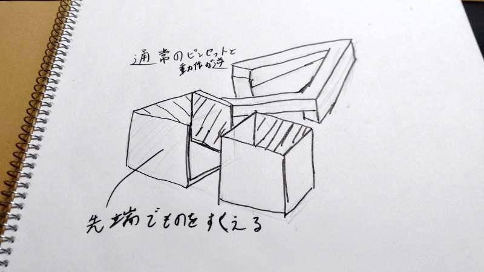
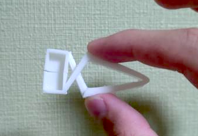
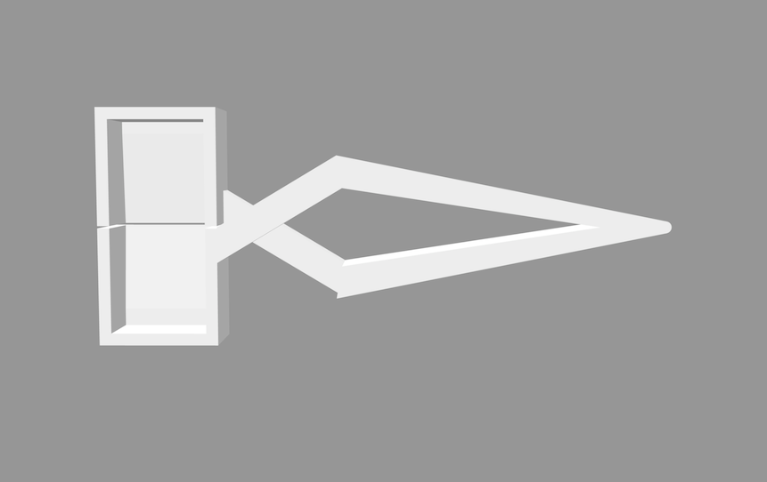
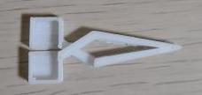
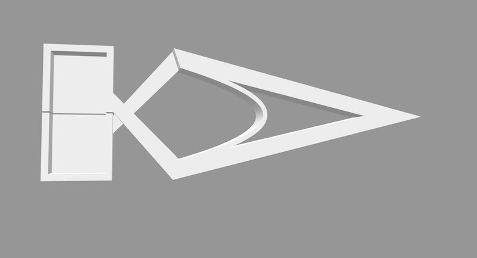
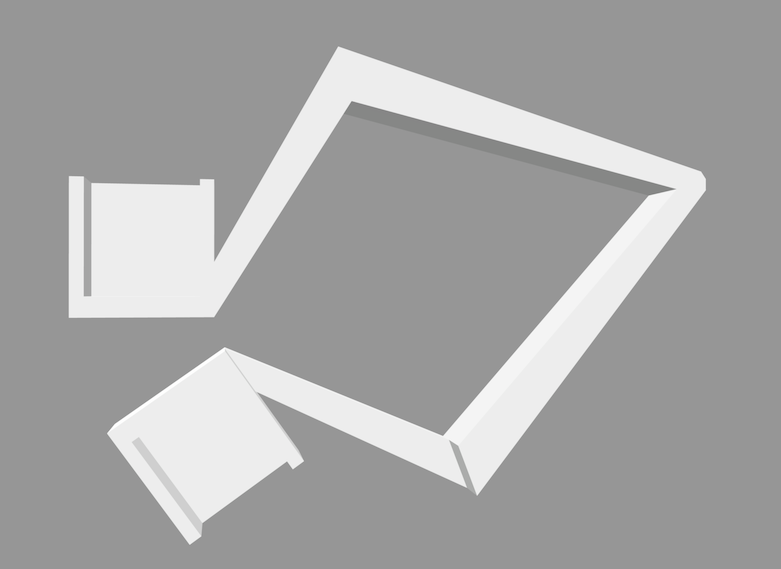
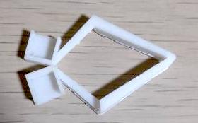
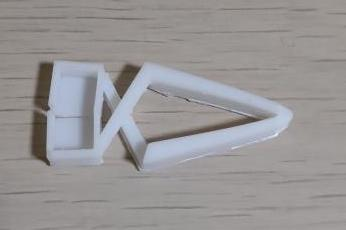

第一回課題 逆作動ピンセット
目次
1 構想段階の手書きスケッチ
2 作品の画像
3 設計ファイル
逆作動ピンセット stlファイル4 作品の説明
通常のピンセットとは反対の動作をする逆動作ピンセットで、
挟むだけでなくすくうことができる形になっている
5 なぜこの作品を作ろうという想いに至ったか
ペットの飼育ケージの掃除ですくうことと挟むことが必要になるため
両方が可能な道具が欲しかったため
6 制作プロセス
初期段階では下のstlで出力した。
逆作動ピンセット v0


しかしこのデータでは戻る力が弱く、隙間ができてしまい、ものを挟むことが難しかった。
そこで次に下のstlのように内側にアーチ構造を追加して戻る力を強くしようとした。
逆作動ピンセット v5


アーチの厚さを0.7mm,1mm,2mmとかえて試したが開くのに力がいるようになるだけで
戻る力が大きくなることはなかった。
方針を変えてピンセットを下のように開いた状態で出力した。
逆作動ピンセット v5


このように出力した後、ピンセットを閉じることによって
戻る力が大きくなり、ものをしっかりと挟めるようになった。
